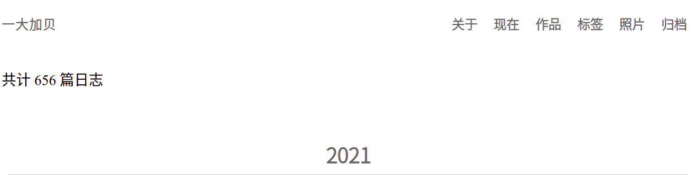

让博客的导航栏固定在窗口的边缘
移动端是响应式，不需要固定导航栏。以下说明的是在桌面端，测试浏览器 Google Chrome，系统 Ubuntu 20.04.1。
我博客原来的导航栏是跟随列表移动的，前天我觉得这样不太方便，所以我开始想着要把导航栏固定在那，这样不需要用鼠标滚那么久，当然你可以用快捷键 Ctrl + Page Up，但还是不方便。于是，今天我开始实现这个想法。
我进行的所有改动都在 tianheg/blog 仓库的这条 commit 下：9137139，下面叙述我的改动以及意义。
主要改动的文件：=assets/scss/_navigation.scss=，=assets/scss/_content.scss=，其他文件：=assets/scss/_footer.scss=。
assets/scss/_content.scss
.content {
margin-top: 6.4rem; // 原来是 1.6rem
}

- =margin-top=：它作用是改变盒子外边距
1.6 不足够把“共计 x 篇日志”显示出来，所以就按照 1.6 的整数倍挨个试，又因为
margin-bottom: 3.2rem; 所以下意识就试了 6.4，成功！